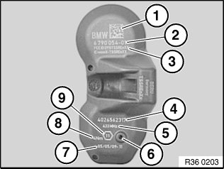
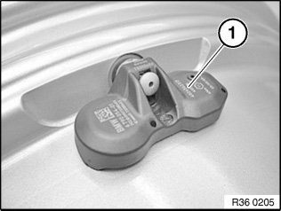
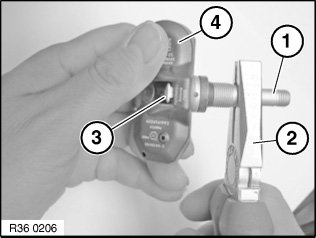
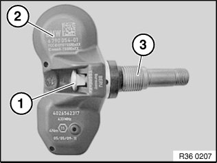
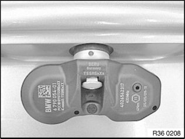
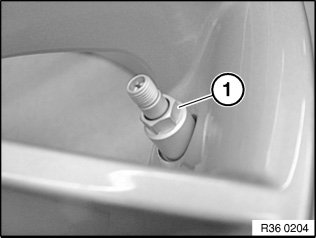

36 11 533 Removing and Installing/Renewing Tire Pressure Control Wheel Electronics (2nd Generation)
36 11 533 Removing and installing/renewing tire pressure control wheel electronics (2nd generation)Important!
Before removing or refitting, check which generation of wheel modules is fitted (See BMW parts catalogue)
If the electronic wheel module has been removed, the complete valve must be replaced.
Note:
There are two different electronic wheel modules. The SP303 electronic wheel module must be used with RDC-01 and RDC-02 from model year 03/06.
The Gen3 electronic wheel module must be used with RDC-LC from model year 09/09.
If a tire sealant has been used, replace the electronic wheel module.
When a tire has been removed, do not clean the rim with installed electronic wheel module with high-pressure cleaner.
Do not treat electronic wheel module with solvents, cleaning agents etc. If dirty, wipe with a clean cloth only.
Before the installation of new wheel electronics with valve, thoroughly clean the valve bore of the wheel rim.
Do not clean electronic wheel module with compressed air.
Necessary preliminary tasks:
^ Remove tire

Labelling of Gen3 electronic wheel module for RDC-LC
1 Data Matrixcode
2 BMW part number
3 FCC ID = radio authorization
4 Electronic wheel module ID
5 Transmission frequency
6 Pressure sensor
7 Width across flats of union nut
8 Tightening torque
9 Production date of electronic wheel module

Labelling of electronic wheel modules SP303 RDC-01 and RDC-02
1 Transmission frequency of electronic wheel module
2 Large Torx socket screw
3 BMW part number
4 Tightening torque of Torx screw and union nut
5 Width across flats of union nut
6 Serial number of electronic wheel module
7 Production date of electronic wheel module
Note:
The following illustrations only show removal and refitting of the 3rd generation wheel module. The instructions also apply without alteration to the wheel module SP303.

Removing electronic wheel module
Release union nut (1).

Remove wheel module and valve (1) from valve hole.

Using suitable pliers (2), unscrew valve (1) from the thread of the square-head bolt (3), while holding the wheel module (4) firm.
Completely unscrew valve (1).
Remove square-head bolt from wheel module holder.
Installation:
Replace valve.
Important!
Before the installation of new wheel electronics with valve, thoroughly clean the valve bore of the wheel rim!
Also make sure that the valve bore is free of burrs

Installing electronic wheel module
Insert new square-head bolt (1) in wheel module (2).
Screw single-use valve insert (3) three turns onto square-head bolt (1).
Note:
Make sure the square head screw (1) fits exactly in the holder for the electronic wheel module!

Insert valve insert with electronic wheel module into cleaned valve bore.
Both outer feet on the underside of the wheel module must be resting against the rim wall.

Screw on sleeve nut (1) by hand as far as it will go.
Tighten sleeve nut until the inner strip-off ring breaks. Breakage is perceptible audibly and tangibly (momentary drop in torque resistance).
Then fully tighten sleeve nut (1).
Tightening torque 36 11 1AZ.
Important!
Fixing must not under any circumstances be retightened!
The square-head bolt should be located precisely in the wheel module holder.
After tightening, the electronic wheel module must fit snugly on the rim!